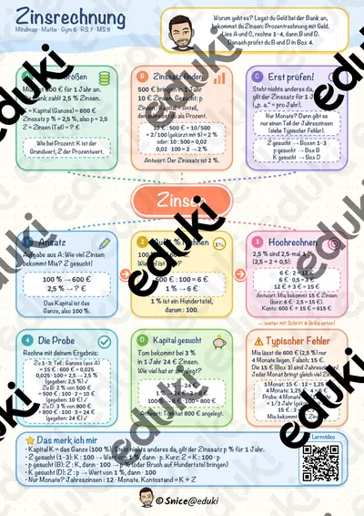
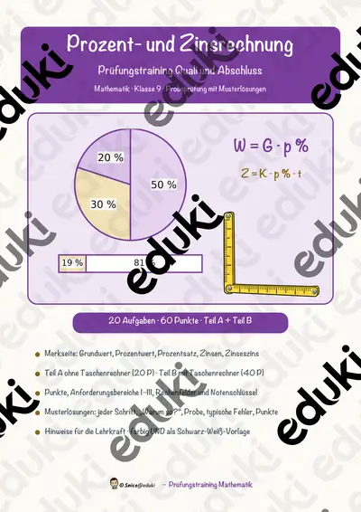

Lesespur: Zinsen berechnen: rund um den Weltspartag – Lesespurgeschichte mit Rätseln (Klasse 8)
Zinsen berechnen – rund um den Weltspartag – Lesespurgeschichte Mathematik (Klasse 8)Schick deine Klasse auf eine Lesespur durch die Zinsrechnung! Aylin und Moritz aus der 8b nehmen am Weltspartag an einer Mathe-Rallye im Foyer des Rathauses teil. Finanzcoach Herr Brückner betreut die Stationen, und der kleine Taschenrechner Rechni ist immer mit dabei. Die Jugendlichen lernen die Grundbegriffe Kapital, Zinssatz, Zinsen und Laufzeit, rechnen Jahres- und Monatszinsen, vergleichen Sparen und Kredit, erfahren, warum der Dispo teuer ist, was Inflation mit dem Realzins macht und wie der Zinseszins das Kapital immer schneller wachsen lässt. Am Ende jedes Abschnitts verrät ein Hinweis den nächsten Ort auf dem Plan – nur wer genau liest, findet den Weg und sammelt alle geheimen Buchstaben zum Lösungswort.
Die perfekte Lesespur für den Mathematikunterricht in der 7. und 8. Klasse – passend zum Weltspartag Ende Oktober, zur Einführung oder Wiederholung der Zinsrechnung als Anwendung der Prozentrechnung, fächerübergreifend mit Wirtschaft, ideal auch für Vertretungsstunden. Geeignet für Mittelschule, Realschule, Gymnasium und Gesamtschule. Das Material ist SOFORT EINSETZBAR und in DREI DIFFERENZIERUNGSSTUFEN (leicht ★ / mittel ★★ / schwer ★★★) angelegt.WICHTIG: Das komplette Material ist sowohl in FARBE als auch in SCHWARZ-WEISS enthalten – ideal zum Sparen von Druckkosten.DAS IST ENTHALTEN
- Lesespurgeschichte in 3 Niveaus (leicht, mittel, schwer)
- farbiger Plan des Rathausfoyers als Suchkarte
- Hörverstehen mit QR-Code zur MP3 (selbstständiges Hören mit Kopfhörern)
- vier Aufträge auf dem Weg: eine Zuordnung (Grundbegriffe der Zinsrechnung), ein Quiz, eine Zinsaufgabe und ein Steckbrief
- Rätselseite (Wörter-Suchsel + Fragen rund um Zinsen)
- Ausmalbild zum Thema
- ausführliches Lösungsblatt für die Lehrkraft
- alles zusätzlich als komplette Schwarz-Weiß-VarianteSO GEHT DIE LESESPURDie Schülerinnen und Schüler lesen ab START, finden im Text den nächsten Ort, suchen ihn auf dem Plan und lesen bei dieser Station weiter. An jeder richtigen Station gibt es einen Buchstaben. Eingeplante Sackgassen (Garderobe, Wasserspender, Pflanzenkübel, Aufzug) sind keine Stationen und dienen der Selbstkontrolle. Am Ende werden die gesammelten Buchstaben umgestellt und ergeben ein geheimes Lösungswort. (Die Lösungen sind selbstverständlich nur im Lösungsblatt für die Lehrkraft enthalten.)INHALTLICHER SCHWERPUNKTZinsrechnung als Prozentrechnung (Kapital = Grundwert, Zinssatz = Prozentsatz, Zinsen = Prozentwert), Jahreszinsen Z = K · p : 100, Monats- und Tageszinsen, Sparplan, Kredit und Dispositionskredit, Inflation und Realzins, Zinseszins mit Beispielrechnung.ABGEDECKTER LEHRPLAN (Klasse 7/8)
- Mathematik (LehrplanPLUS Bayern) – Prozent- und Zinsrechnung: Zinssatz, Zinsen und Kapital berechnen, Zinsen für Teile eines Jahres, Zinseszins.
- Wirtschaft – Sparen, Kredit, Umgang mit Geld.
- Deutsch – Sachtexte sinnentnehmend lesen; einem Hörtext gezielt Informationen entnehmen (Hörverstehen mit MP3).Geeignet für Freiarbeit, Stationenlernen, Vertretungsstunden, Wochenplan und für die Woche rund um den Weltspartag. Klassenstufe 7 und 8.
Ähnliche Materialien

Zinsrechnung Mindmap + 4 Arbeitsblätter mit Lösungen + Lernvideo (QR) – Zinsen, Zinssatz, Kapital & Monatszinsen

Zinsen im Kredit – Arbeitsheft mit Lösungen (BwR 9, Realschule Bayern)

Quali Mathematik Teil A – rechnen ohne Taschenrechner – Lesespurgeschichte mit Prüfungsaufgaben (Klasse 9)

Inflation Lückentext mit Wortspeicher Hörverstehen und Suchsel

Kredit Lückentext mit Wortspeicher Hörverstehen und Suchsel

Prozentwert berechnen – Arbeitsheft mit Lösungen (BwR 7, Realschule Bayern)

Prozent- und Zinsrechnung – Prüfungstraining Mathematik (Klasse 9)